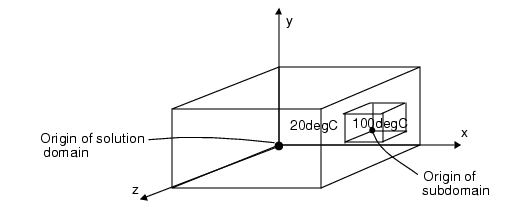

You can initialize
variables over sub-regions of the solution domain, within the solution
domain and specify initial values of variables within those subdomains.
Procedure
- To create
a subdomain, select System in the data tree and click the lnitial
Subdomain icon in the New Object Palette.
If the subdomain is created
using the Project Manager, it is one-tenth the size of the solution
domain and located at its origin.
Subdomains are rendered as
a peach-colored cuboids in the drawing board. Visibility of Subdomains
in the drawing board is controlled by the Display Subdomains check
box in the Drawing Board tab
of the User Preferences dialog box.
- Define the location and size
of the subdomain, and then use the Initial
Values tab of the property sheet to define the initial value
for each selected variable.
Figure 1 shows a solution domain in
which a subdomain has been added. The value of temperature is set
to 20°C in the overall domain, and to 100°C in the subdomain.
Figure 1. Initial Values in Subdomain